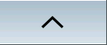
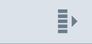

Weitere Touch-Bedienelemente
Bedienelement | Funktion |
|---|
| | Schaltet in die nächste horizontale Softkey-Leiste. Wenn Sie die 2. Seite des Menüs aufgerufen haben, wird der Pfeil rechts eingeblendet. |
|  | Schaltet in das übergeordnete Menü. |
|  | Schaltet in die nächste vertikale Softkey-Leiste. |
| | Durch Antippen des Alarm-Cancel-Symbols löschen Sie alle anstehenden Cancel-Alarme. |
 | Wenn ein Kanalmenü projektiert ist, wird dieses angezeigt. Durch Antippen der Kanalanzeige in der Statusanzeige schalten Sie auf den nächsten Kanal um. |
Siehe auch:
Bildschirmaufteilung